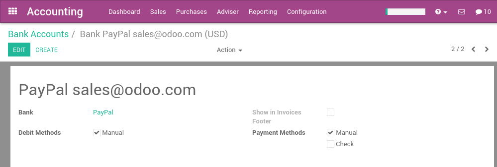

With Odoo, you can synchronize your PayPal account. That way, you don't have to record all your PayPal transaction in your favorite accounting software. The synchronization is done every 4 hours, and you can start reconciling PayPal payments in just a click.
Configuration
Install the account_yodlee module
Start by installing the account_yodlee module, if it is not already installed. To do that, got the the menu of the accounting application. In the section Bank & Cash, set the option Bank Interface - Sync your bank feeds automatically.

Click on the apply button once it's done.
Setup your PayPal account
A PayPal account in Odoo is managed like a bank account. To setup your PayPal account, use the menu . Create a new bank account and name it PayPal. In the bank field, you can set PayPal.
Once the PayPal account is created, go back to the Accounting dashboard and click on the Synchronize button. In the dialog, choose PayPal as the online institution and click on the configure button.

Then, you will have to provide your credentials to connect to PayPal.
Примечание
Your Paypal must be in English (if it is not the case you must change the langage of your Paypal account) and if you use a Paypal business account you must switch back to the old interface in order for it to work with Online feeds (you can switch from new to old interface in your Paypal account).
If you don't do this you will get a message either saying to put Paypal in English or that the site is not supported.
If you configured your Paypal account correctly you should get to the next step of the Online feeds configuration. There you will have a screen with a date to fetch transaction from and a list of account to choose. You must choose the Paypal balance account.
Once everything is done, you should see your PayPal transactions right in Odoo and you can start reconciling your payments.
Enjoy a full integration! You don't need to record transaction manually anymore.
Примечание
You only have to provide your credentials the first time. Once done, Odoo will synchronize with PayPal every 4 hours automatically.